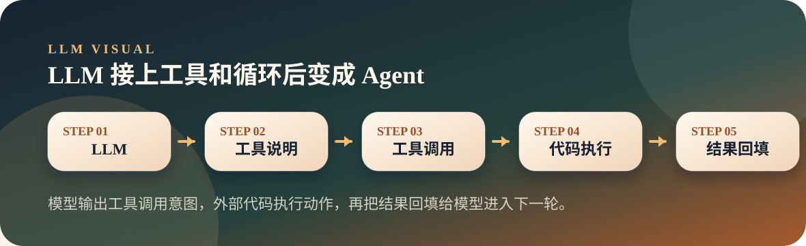
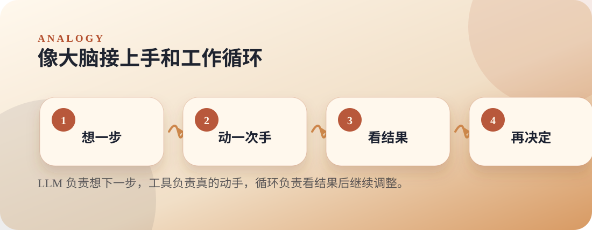

从零开始理解大模型
10. 从大模型到 Agent：下一个词预测如何长出手脚
LLM 本身只生成 token；接上工具定义、执行函数和循环后，才变成能作用于外部世界的 Agent。
AgentToolsLoop
Thesis
文章主旨
LLM 本身只生成 token；接上工具定义、执行函数和循环后，才变成能作用于外部世界的 Agent。
模型可以写出“我会创建文件”，但不会真的创建文件。要让它动手，需要把工具说明发给模型，并由外部代码执行工具调用。
Visual
两张图看懂
第一张图讲机制怎么流动，第二张图把抽象概念落到生活直觉。


Analogy
原文比喻
大脑指挥四肢
文章把大模型系列说成“大脑怎么工作”，把 Agent 系列说成“大脑怎么指挥四肢”：LLM 负责想，外部代码负责做，循环把两者串起来。
对应到机制：模型输出工具调用意图，外部代码执行动作，再把结果回填给模型进入下一轮。
Explain
概念拆解
按下面三步讲，会比直接抛术语更顺：先建立直觉，再解释机制，最后落到本页结论。
Step 01
先守住边界
LLM 自己只生成 token，不会真的执行命令或创建文件。
Step 02
再接工具
工具说明进入上下文，工具实现留在外部程序里；模型输出意图，程序执行动作。
Step 03
最后形成循环
结果回填给模型，模型再决定下一步；这个循环让 LLM 开始作用于外部世界。
本页要带走的三句话
- LLM 只输出意图，外部代码负责执行动作。
- 工具说明进入模型上下文，工具实现留在程序里。
- Agent 是 LLM 能力的工程延伸，不是另一个神秘物种。
Small Check
可选小实验
把前九讲的模型机制接到 Agent：模型负责决策，代码负责执行，结果再回到上下文。 实验只用于观察现象，不作为本页主线。
可选实验命令
python3 llm/10-agent/tiny_agent.py "查看当前目录下有哪些文件"- 脚本需要
OPENAI_API_KEY和可选OPENAI_BASE_URL。 - 运行时会打印
[Step] 调用 LLM，然后看到模型是否选择工具。 - 当模型调用
execute_bash、read_file或write_file时，真正执行的是 Python 函数。 - 工具结果会作为
tool消息写回上下文，模型据此进入下一轮。
Extend
继续阅读
教学页以讲清文章为主；完整原文与配套脚本保留在仓库中，方便分享后继续查阅。